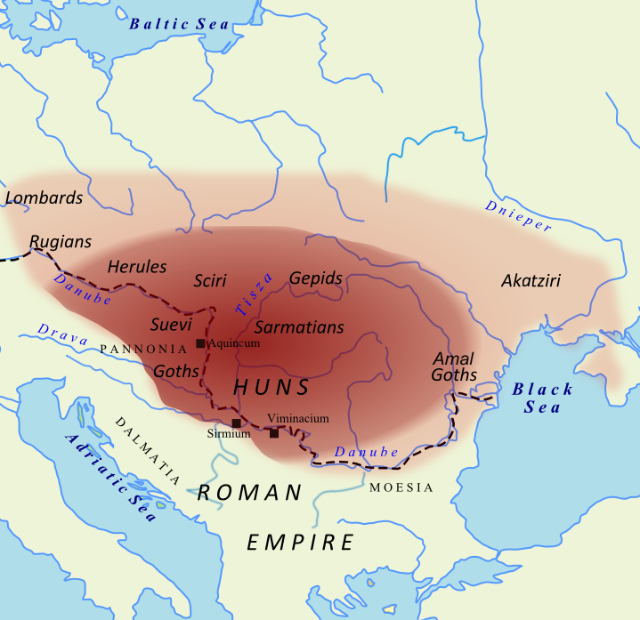

Hunok
Eredetük
A hunok a kínai történészek feltételezése szerint a hsziungnuk – (kínai 匈奴, pinjin xiōngnú; egykori ejtése kb. hiungnu, közelítő mai kiejtése hsziungnu – leszármazottai lehettek, akik fél évezreden át uralták Belső-Ázsia keleti területeit. Birodalmuk az i. e. 3. századtól az i. sz. 2. századig állott fenn. A hsziungnuk szakadatlanul hadban álltak a kínai seregekkel, s többek között e véget nem érő viszálykodás miatt építtették meg a kínai uralkodók a kínai nagy falat. A kínaiak végül, a korai Han uralkodócsalád idejében, legyőzték ősi ellenségüket. A hsziungnuk szövetsége ekkor két részre bomlott. Északinak nevezett águkból származhattak a hunok, s egyes tudósok vélekedése szerint az avarok és a magyarok.
A „hun” név elsőként egy 311. évi csetepatéról hírt adó szogd nyelvű dokumentumban bukkan fel. A levél írója a kínai tudósításokban szereplő hsziungnukat khun (xwn) névvel illeti. Róna-Tas kétkedni látszik e tudósítás hitelében, illetve a hsziungnuk és a hunok azonosságában, mivel hozzáteszi, hogy a 4. században a hsziungnuk már felőrlődtek, és nevüket – amint az a pusztai népek között szokásban volt – mások ölthették magukra. A 350. évben Közép-Ázsia területének egy részét hódító lovasnép vette birtokba. (Vásáry István stb. nekik tulajdonítja a Baktriában veretett görög feliratú pénzérmék egyikét-másikát, melyeken hiono, oiono felirat díszeleg.) Ugyanekkor kínai források a hsziungnuk Szogdia elleni támadásáról értesítenek. A hsziungnu, hiono, oiono stb. név – a kínai és a szogd források tartalmi egybevetése szerint –feltételezhetően azonos népességet jelöl.
| Hunok | |
|---|---|
| Első felbukkanás | Kr.e 3.század |
| Bejárt/Meghódított területek | Belső-Ázsia, Közép-Ázsia, India, Európa |
| Életmód | Nomád pásztorkodás |
| Székhely | Kárpát-medence |
| Utolsó felbukkanás | Kr.u. 5.század |
| Uralkodó | Attila király |
Történetük
Amennyiben tehát a hiono stb. nevű népességet azonosnak tekintjük az európai hunokkal, akkor nevezettek első ismert szállásterülete a közép-ázsiai puszta volt, ahová a hsziungnu állam összeomlása után költözhettek. Megtámadták Szogdiát és az ászik birodalmát. Az alánoknak is nevezett ászik betagozódtak a hunok szövetségébe. A hunok másik nagyobb szállásterülete a Volga, illetve a Déli-Urál vidékén volt.
A 375. évben, Balambér (Valamibir) vezetésével – feltételezések szerint a Volgán keltek át – a kelet-európai puszta lakóit (többek között az alánokat és a keleti gótokat) uralmuk alá hajtva erős birodalmat hoztak létre.
A következő évben az Al-Duna vidékéig jutottak. A Balkán-félszigeten több sikeres hadjáratot vezettek, többek között a Keletrómai Birodalom ellen is, bár ezek kezdetben csak felderítő portyázások voltak.
A hunok Belső-Ázsiában
A kínaiak által hsziungnu névvel illetett népesség főként régészek munkája nyomán, és Sze-ma Csien, Si csi című művének 110. fejezetéből ismert. A szerző e szakaszt kifejezetten a hunok történetének szentelte.
Kínai forrásokban a hunok nevét első ízben az i. e. 318. évben említik. A régészeti leletek tanúsága szerint azonban a kínaiak által Hu (barbár) névvel is illetett földművelő-pásztorkodó népesség – eredete szerint részben kelet-európai – már korábban, az i. e. 7. századtól jelen volt a kínaiak birtokainak északi határvidékén. E népesség az i. e. 4–3. században elfoglalta Ordosz északi részét, valamint az északnyugati területek pusztáit a Sárga-folyó nagy kanyarulatánál.
Régészeti leletek tanúsága szerint Belső-Mongólia és Ninghszia területének pásztorkodó népessége társadalmilag fejlett és gazdag volt. Ismerték, és általánosan használták a vasat, katonai, kereskedelmi stb. kapcsolatot tartottak fenn a kínai közösségekkel, különösen Csao állammal.
Mai napig vita tárgya, milyen nyelven beszélt a nyugati feljegyzésekben khion (chionitae), khoun (khounnoi) stb., kínai forrásokban hsziungnu stb. – az avarok egyik neve szerint kony, a mai magyar köznyelvben hun – névvel illetett népesség. A kínai forrásokban fennmaradt néhány szóból – főként címek, személynevek – következtetve szakembereink altaji (mongol, török), iráni és paleoszibériai (ket) nyelvekre is gondoltak. S hozzáteszik még, miszerint egyáltalán nem biztos, hogy a szövetség összes törzse ugyanazon nyelvi csoporthoz tartozott, s nem bizonyos az sem, hogy a hunok kezdetben ugyanazon nyelvet beszélték, melynek szavait későbbi feljegyzésekből ismerjük.
Hun üst Klösz György fényképén A hunok szövetségének uralkodó csoportját Thúry József – különböző források tüzetes elemzése, illetve az adatok összevetése nyomán – az ujgurokkal azonosítja. Felfogása szerint a török népek legrégebbi ágazata az ujgur és az oguz. Ezek idők folyamán mind több és több törzsre váltak szét, más és más helyre költöztek.
A hunok szövetségét az i. e. 215. évben megrendítették az egységbe tömörült kínaiak hadjáratai. Csin Si Huang-ti megbízta egyik hadurát, Meng Tient, hogy foglalja el, és erősítse meg Ordosz vidékét, s hogy űzze észak felé a Tou-man sanjü által uralt hunokat. (A csanjü cím tartalma menny fia.)
Tou-man halála után (i. e. 209.) fia, Mao-tun vette át a hunok törzseinek irányítását. A hunok megtörték Kao-cu császár erejét, kényszerítették, hogy Kína számára megalázó egyezményt írjon alá (i. e. 198.), s visszafoglalták Ordoszt is. A viszonylagos béke az i. e. 134. évig tartott – ez idő alatt a hunok biztosították uralmukat Kelet-Ázsia pusztai népei fölött – az i. e. 121–119. évben azonban Kína támadásba lendült, s végül északra, a Góbin túli területekre űzte ellenségeit. A hunok a Szelenga vízgyűjtő területén telepedtek le. Elsősorban pásztorkodó állattenyésztéssel foglalkoztak, de földet is műveltek, s természetszerűen kézműiparuk, kereskedőik is voltak. A letelepedett lakosság falvakban, erősített városokban élt.
A hunok az i. e. 166. évben elűzték a jüecséket a Csilien-hegység vidékéről; uralmuk alá hajtották vuszunokat, Loulan városát, a hucsie nevű, s ezen kívül még huszonhat, név szerint nem említett népet. A jüecsék az Ili folyó völgyében telepedtek le, kimozdítván onnan az őstelepes szakaurakat. Később azonban e vidékről is menekülniük kellett, és végül a tokhárok földjén, Kelet-Baktriában állapodtak meg.
Ez időben Közép-Ázsia népei, legalábbis névlegesen, elismerték a hunok hatalmát. A Si csi ekként számol be erről: „Valahányszor egy hsziungnu követ jelent meg a tartományban a csanjütől származó igazolással, államról államra kísérték, és ellátták élelemmel, és senki sem merte visszatartani, vagy bármilyen nehézséggel akadályozni”. A hunok közvetlen befolyása nyugaton mindazonáltal csak a Tarim-medence északkeleti részére, valamint a Turfani-medence vidékére terjedt ki. A szolgák felügyeletével megbízott parancsnok hivatalát, mely felelős volt az adók és kényszermunka kivetésérét, Karasar városába telepítették. A dzsungáriai vuszunok a hunok alattvalói voltak, s alkalmanként Kangcsü stb. lakói is sarcot fizettek a hunoknak.
Miután a kínaiak északra űzték őket, a hunok erejét megosztották a belső viszályok. Fejedelmek váltották egymást gyors egymásutánban, s helyi kiskirályok küzdöttek egymással a hatalomért. A széthúzást kihasználták a kínaiak, és i. e. 115–60. között harcba szálltak a nyugati területek birtoklásáért. E küzdelem fő eseményei közé tartoznak Csang Csien szövetségesek szerzését célzó küldetései (i. e. 137. és 115.), a kínai hadsereg amürgi szakák (i. e. 101.), valamint Csüsi (Turfan) elleni hadjárata (i. e. 67–60.). (Lásd még: Kínai–hsziungnu háborúk.) A kínaik végül elfoglalták, s igazgatásuk alá vonták a nyugati területeket.
Az i. e. 57. évben a hunok szövetsége előbb öt, majd végül két csanjü uralma alá került. A Huhanje vezette déli hunok az i. e. 53. évben behódoltak Kínának. Az északi hunok fejedelme, Csecse csanjü, nyugatra vonult, s a kangarokkal szövetkezve próbálta hatalmát megerősíteni. A kínaiak azonban űzőbe vették, s a csecsei csatában legyőzték.
Az ezt követő nyugalom nem tartott soká. A hunok, kihasználván a Vang Mang uralkodása idején (i. sz. 9–23.) keletkezett zavarokat, visszaszerezték a nyugati területek irányítását. Szövetségük azonban hamarosan (i. sz. 48.) újra kettészakadt, s az egyik csoportjuk Kínában telepedett le.
Az északi hunok eleinte sikereket értek el, a 61. év után például beavatkoztak Hotan és Sacsö (Jarkand) életébe, Kína azonban a 74. évben visszaszerezte az irányítást Turfan vidékén, és az Ih Bajan-i csatában elűzte a hunok fejedelmét és híveit a fejedelmi szálláshelyről, azaz a Szelenga vidékéről is. A hun csanjü híveivel, a 91. évben, menedékre lelt az Ili folyó völgyében, számos hun törzs azonban megadta magát, és Kína határain belül telepedett le. Az északi hunok maradékai a 2. század első felében folytatták a Kína elleni harcot Hami és Turfan vidékén. A 3. század közepén szerkesztett Vej lüe ezek sorsáról, illetve hsziungnukról a Tien-san északi előterében semmit sem tud.
A hunok Közép-Ázsiában
Dionüsziosz Periegetész (kb. 117–138.) térképe a Kaszpi-tenger északi partvidékénél jelöli a hunok (ounnoi) szállását, Klaudiosz Ptolemaiosz pedig Sarmatia Europaea területén, a Dnyeper mellékén (khounoi). Utóbbi szerző munkájában szerepel az Urál folyó elferdített törökös neve (Daix) is.
A hunok birodalmának felszámolása után kínai forrásokban már csak egyszer-egyszer találkozunk a hsziungnu névvel. Ehelyett különböző csoportosulásokról, pl. kaocsö (kocsi), tielö (tereg: kocsi, taliga), illetve népekről, pl. hun, hunjü (kun), tucsüe (türk), vejho (ujgur) írnak. Valamennyi kínai forrás, mely beszámol e népességekről, állítja, hogy mindezek a felbomlott hsziungnu birodalom népeit képviselték.
A Vejlüe 25–28. szakasza szerint – nevezett iratot a 3. században szerkesztették – a Cunglingtól (Pamír) északra van Hutö királysága; Kangcsütől északnyugatra Csienkun (a kirgizek) királysága, északra pedig Tingling (mókusprémesek) királysága, s e három állam közül Csienkun központi helyzetű.
A szóban forgó forrás a Belső-Ázsiában visszamaradt törökös népekről is beszámol. A hsziungnu csanjü szállásától (a mai Ulánbátor környéke) északra van Hunjü (a kunok), Csüsi, Tingling, Kokun (a kirgizek) és Hszinli királysága. A leírás szerint, mint láthatjuk, a kirgizek és a mókusprémesek egy-egy csoportja nem mozdult el Belső-Ázsiából.
A közép-ázsiai szogdok és szkíták birtokaira a 4. század közepén betört a hunoknak (chionitae, khounnoi, ounnoi stb.), oguroknak, oguzoknak, avagy úzoknak, tielö népeknek stb. is mondott törökök egyik harcias csoportja, majd követték őket a heftalitáknak is nevezett haladzsok az 5. század közepén. A törökök összekovácsolódtak a közép-ázsiai szkíta népekkel, ászikkal, avarokkal, kangarokkal. A török és szkíta népesség keveredése új népalakulatokat is életre hívott.
A Vej su nevű kínai forrás a 457. évre keltezi a következő, Szogdiával kapcsolatos eseményt: „A hsziungnuk korábban megölték a királyt, és elfoglalták az országot. Huni király a harmadik uralkodó a sorban.” E tudósítás második mondata már az avarokra vonatkozik. A 420. évtől ugyanis ők uralták Szogdiát.
A belső-ázsiai törökös népek – a hunok szövetségének részesei – a 350. évben elsőként Szogdiát és az ászik közép-ázsiai birtokait rohanták meg, s az ászikkal egybevegyülve a kelet-európai pusztán élő alán (ászi) és germán csoportokra törtek. Egy részüket elűzték, kiszorították lakóhelyükről, más részüket uralmuk alá hajtották, s ezekkel egyesülve Délkelet- és Közép-Európát fenyegették. Az európai hunoknak nevezett kötelék tehát az uralkodó törökök, szkíta ászik, valamint germánok csoportjaiból szerveződött. Előőrseik a 4. század végén jelentek meg a Kárpát-medencében.
Birodalmuk összeomlása (i. sz. 91.) után a hunok kirajzottak Belső-Ázsia pusztáiról. Az Altaj, a Tannu-ola, az Orhon folyó, illetve a Tien-san által határolt területen élő törökös népek egy része az Irtis, a Kazah-hátság, illetve a Déli-Urál vidékére költözött, előőrseik pedig Kelet-Európa pusztáin is megjelentek. Nyugati történetírók munkái először a 2. század első felében adnak hírt róluk.
Vándorlás Eurázsiában
A hunok Európában és a Kárpát-medencében
A hunoknak nevezett alakulat az i. sz. 375. évben megrohanta az Ammianus Marcellinus által tanaitáknak, azaz doniaknak, Donnál lakóknak, Don-mellékieknek nevezett alánok területeit. A legyőzött alánok csatlakoztak a hunok szövetségéhez. A következő mintegy három évtizedben a hun és alán nevet oly sokszor említik együtt, hogy a hunok (törökös népek szövetsége) és a szkíták (jelen esetben az ászik egyes csoportjai) összekovácsolódásában és szoros együttműködésében kételkedni nemigen lehet.
„A hunok megölték és kifosztották őket [a tanaitákat], és a túlélőket szövetséges szerződéssel magukhoz láncolták; azután társaságukban merészebben megrohanták Ermenrichus kiterjedt és gazdag szállásait.” A keleti gótok – bízván a hunok egyik kötelékében, kiket zsoldosként maguk mellé állítottak – egy ideig ellenálltak a hun sereg rohamainak, de számos vereségük, s királyaik (Hermanarik, illetve fia, Withimir) halála után meghódoltak. Csupán kisebb csoportjuk menekült, Alatheus és Saphrax vezetésével, római területre.
A nyugati gótok a hunok támadását a Dnyeszter jobb partján várták, a rohamnak azonban nem tudtak ellenállni, ezért visszavonultak, s átkeltek a Szeret folyón. A nép egyik része – Athanarik vezetésével – az Erdélyi-medencébe (a szkíták nyelvén, görögösen, Kogaionosz, a gótok nyelvéhez hajlítva Hauhaland, latinosan Caucaland) költözött. (Lásd még: Szamolxisz.) A nyugati gótok másik része az Al-Dunánál várta, hogy bebocsátást nyerjen a Római Birodalom területére, s ott letelepedjék. Követték őket Aletheus és Saphrax keleti gótjai, a taifalok, alánok és más nemzetek egyes csoportjai is. Később e bevándorlók (nagyrészt germánok) elhatalmasodtak, s a Római Birodalom, illetve a nyugati világ sorsába is beleszóltak.
A 376. évtől a hunok urai lettek a kelet-európai pusztának. Vezérlő törzseik a puszta keleti felében, előretolt csapataik pedig az Al-Duna vidékén táboroztak le. A 377. évben hunok és alánok kisebb kötelékei már a gótok szövetségeseként léptek fel a római erőkkel szemben. Ez volt a hunok első balkáni szereplése. Alán segédcsapatok a következő évben a hadrianopolisi csatában is részt vettek. A hunok, azaz a törökök osztagai is jelen voltak, de távol maradtak az ütközettől.
A következő két év eseményeinek kapcsán újólag együtt említik a hunok, alánok és gótok nevét, de hogy éppen kik voltak, akik kirabolták és felégették Trákia falvait, arról forrásaink nem szólnak, nemigen tesznek különbséget a nevezettek között. A 380. év után a balkáni tartományokból már nem említenek hunokat és alánokat. Megemlékeznek ellenben a gótokról akik nagy számban szolgáltak a római seregekben.
A hunok előrenyomulása folytatódott. A 381–382. év telén „hunokkal elvegyült” szkírek és karpodákok keltek át az Al-Dunán, a rómaiak azonban néhányszor összecsaptak velük, s visszaűzték őket. A 382. év végén Theodosius békét kötött a nyugati gótokkal. A germánok Moesia inferior és Dacia ripensis tartományban kaptak földeket, s a béke fejében a hunok betörései ellen védték a Birodalmat.
Ez idő tájt maguk a hunok vezérlő fejedelmei és kíséretükben levő csapatok is a Havasalföldön ütötték fel sátraikat. A Kárpát-medence északi részét benépesítő nyugati germán markomannok és kvádok a hunok elől a mai Csehország és Dél-Németország vidékére, a szvébek központi területeire menekültek.
A 383–394. évi polgárháború, a császári hatalom elleni felkelés idején hun és alán lovas csapatok harcoltak (a 384. évben) Theodosius seregében a juthungok ellen. A hunok – Maenchen-Helfen szerint – ekkor már Alföldünk nagyobb részét birtokolták. Urai lettek az itt élő, korábban letelepedett korai szkítáknak, keltáknak, ásziknak stb.
A Római Birodalom keleti tartományaiban a „barbár hordák” – Claudius Claudianus felsorolása szerint getae (géták), sarmatae (ászik), daci (dákok), massagetae (ászik), alani (ászik) és geloni (gelónok), illetve visi (nyugati gótok), bastarnae (basztarnák), alani, huns (hunok), geloni, getae, sarmatae – garázdálkodása nyomán válságosra fordult a helyzet.
Szerzőnk híradása nem mentes a történelmi közhelyektől. Hérodotosz például nem a hunokról, hanem a királyi szkíták egyik csoportjáról tudósít, akik az i. e. 7. században megszállták, és az asszírok szövetségeseként huszonnyolc éven át (i. e. 653–625.) uralták Média országát, s egy csapatuk (i. e. 610. előtt) eljutott a filiszteusok országáig. I. Pszammetik fáraó azonban, latba vetve kincstárának javait is, rábírta őket a visszavonulásra.
A 338. év óta a hunokat és alánokat együtt említették, elsőként általában a vezérlő csoportot, azaz a törököket. A 394. évben azonban csak a Saul által vezényelt alánok csatlakoztak Theodosius császár seregeihez, a hunok közül pedig csak azok, akik Trákiában hadakoztak a birodalmi zászló alatt. Alánok szolgáltak Flavius Stilicho seregeiben a 398. évben, és Saul vezényletével a 402. évben. A 406. esztendőben azonban Stilicho szövetségesei között már csak hunokat és gótokat találunk, és testőrségét is hunok adták. A 409. évben már csak hunok szolgáltak a római hadseregben is.
A 401. évben a hunok egyik alakulata – a nyugati szárny uralkodója ez időben Uldin volt –, a Kárpátokat északról megkerülve megtámadta a vandálokat. A hunok alán (ászi) szövetségesei ekkor szakítottak a hunok szövetségével, s kisebb-nagyobb töredékeiket leszámítva a nyugat felé vonuló germánokhoz csatlakoztak. A 406. év utolsó napján a jórészt vandálokból, szvébekből (kvádokból) és alánokból álló tömeg átkelt a Rajnán, és elárasztotta Galliát. A Kárpát-medence alán lakossága ellenben nagyrészt helyben maradt. Iordanes, aki nem egyszer különbséget tesz „szarmaták” (a Havasalföld és a Kárpát-medence ászi lakói) és „alánok” (a hunok ászi szövetségesei) között, előbbieket említi Pannonia területéről. A Balkánon tanyázó nyugati gótok is, a 408. évben, nyugat felé indultak, s két év múlva bevették és megsarcolták Róma városát. Ez után Galliában, majd a frankok támadása nyomán Hispaniában hoztak létre államot, mely az arab hódításig állott fenn. A nyugati gótok utóbb beolvadtak a helyi lakosságba, ahogyan a többi germán nép és a szkíta alánok is.
Paulus diakónus a hunokra vulgares, azaz bolgár néven is hivatkozik az ötödik század első felének egyik harci eseményével kapcsolatban. Egy névtelen római szerző pedig már a 354. év naptárában Ziezi nevű vezetőt és vulgares nevű népet említ.
A 451. évben a hunok megtámadták Galliát. A hun király, Attila seregének zömét germánok (gepidák és keleti gótok) alkották. A vele szemben álló római zsoldos hadak – frankok, a Galliában letelepedett nyugati gótok és alánok stb. – vezetője Aëtius, római hadvezér volt. A két sereg Troyes közelében, locus Mauriacus (Mauriacum) síkján csapott össze. (Lásd még: Catalaunumi csata. Catalaunum történetesen az ott letelepedett gótoktól és alánoktól örökölte nevét.) A hunok e csatát követően visszavonultak Galliából, a következő évben azonban Italiában folytattak hadjáratot.
Attila halála (453.) után a germán szövetségesek fellázadtak, több csatában megverték, s végül (454.) a pannoniai Nedao folyó (talán a Duna) mellett legyőzték a hunokat. Alán és keleti gót töredékek a hunok oldalán küzdöttek, majd a vereség után több helyen átkeltek a Dunán a Római Birodalom területére, és ott letelepedtek. A hunok befolyása a Kárpát-medencében megszűnt, területét az egymással marakodó germán királyságok vették birtokba. A hunok maradékai (beleértve alán szövetségeseik töredékeit is) a Havasalföldön, illetve Keleti-Balkán (Dacia ripensis, Kis-Szkítia, Moesia inferior, Trákia) területén leltek hazára, s néhány évszázad alatt összekovácsolódtak a helyben lakókkal. A hunok másik része a kelet-európai pusztára vonult vissza, ahonnan a hunnak, önmaga által bolgárnak (vulgares, boulgaroi), azaz kavarónak nevezett vegyes népesség – törökök és alánok – jelentősebb része nem is mozdult el. A vulgares név a 354. évben, a boulgaroi név pedig a 480. évben tűnt fel először.
A Kárpát-medencében letelepedett szkíta alánok a germán királyságok – gepidák a Tiszántúlon és Erdélyben, keleti gótok Pannoniában stb. – hűbéres szövetségeseként folytatták életüket. A Duna–Tisza közén és a Temesközben egyes csoportjaik megőrizték függetlenségüket. Az Alföldet a ravennai császári udvar továbbra is „szarmata” (vagyis alán) határvidékként tartotta számon. Az 5. század vége felé még tudósítanak a „szarmatákról”. A 469. évben a keleti gótok ellen harcoló germánok seregében – Babai, illetve Beucan nevű királyuk vezetésével, a kvádok utódainak szövetségeseként – részt vettek a Bolia (Ipoly) melletti csatában. Babai 472. körül elfoglalta Singidunum (Belgrád) városát, a gótok azonban legyőzték. A 488. évben még hallunk az alánokról – egy csoportjuk a gepidák soraiban harcolt a gótok ellen –, azután azonban már csak az avarok honfoglalása idején. Legutoljára Paulus diakónus említ „szarmatákat”, az 568. évben Pannoniából kiköltözött longobárdok szövetségesei között. Istvánovits szerint azonban Árpád népének honfoglalásáig, s még azután is számolhatunk a Kárpát-medencében a „szarmaták” befolyásával.
A Kárpát-medence területét egy évszázadig a gótok, herulok, gepidák és longobardok stb. törzsei uralták. Az 567–568. évben a Közép-Ázsiából kivándorolt avarok vették birtokba területét, s mintegy 250 évig meg is tartották. A germán törzsek többsége az avarok foglalása után Italiába költözött. A Felső-Tisza vidékét birtokló gepidák többsége azonban nem hagyta el a Kárpát-medencét, az avarok hűbérese lett. Néhány száz év alatt egybevegyültek uraikkal, csakúgy, mint az itt élő szkíta alánok és más népek (pl. dákok, illírek, kelták).
A hunok a Kárpát-medencében
A hunok központja a Kárpát-medencében (450.) A hunok a 4. század végén foglalták el a Kárpát-medence területét, pontosabban csak az Alföld keleti felét. A rómaiak Pannonia prima és Valeria tartományt Bleda és Attila uralkodásának kezdetén engedték át a hunoknak.
Attila, a legnagyobb és legismertebb hun király Kárpát-medencei udvaráról egykorú tudósítás is fennmaradt. A bizánci követség vezetője, Priszkosz rétor beszámol a küldöttség utazásáról, valamint a hunok fejedelmének szálláshelyéről stb.
A hunok – Ruga, Bleda (Buda) és Attila vezetésével – kezdetben a Nyugatrómai Birodalom szövetségesei voltak. Seregeik katonai támogatást nyújtottak Rómának Bizánc ellen. Amikor a két birodalom között – a Bizánc elleni két nagy hadjárat eredményeként – erőegyensúly alakult ki, Attila Róma ellen fordult.
A 451. évben a catalaunumi csata eldöntetlenül végződött. Bár magát Flavius Aëtius, a rómaiak hadvezére győztesnek nevezte, a csatateret ő hagyta el, és a következő évi, Róma elleni hadjárat során semmilyen ellenállást nem tanúsított a hunokkal szemben.
A 452. évben Attila betört Italiába, és Róma felé vonult. III. Valentinianus császár Ravenna erős falai mögött keresett menedéket. A római egyház tanácsadói I. Leó pápának is a menekülést javasolták. Ő azonban, a mesés történet szerint, egy különösen finoman megmunkált arany karperecet emelt fel az asztalról, és a következőket mondta: „Ez a hunok munkája. Egy nép, amelyik ilyen műalkotásokra képes, hajlandó lesz az Élet igéjének befogadására is.” Kíséretével Mantova falainál találkozott Attilával, és sikerült elérnie, hogy a hunok megkíméljék Róma városát, s békét kössenek. A hunokat azonban vélhetően nem a pápa szavai késztették visszavonulásra, hanem a dühöngő járvány, s hogy ez időben Bizánc keleten megtámadta a hun birtokokat.
A 453. évben Attila, új házasságának nászéjszakáján, váratlanul meghalt. (Feleségét Iordanes „Ildico” néven említi.) Halála után fiai nem tudtak megegyezni örökségük ügyében; viszálykodásuk meggyengítette a hunok birodalmát. A küzdelemből Ellák került ki győztesen, hatalmát azonban nem tudta megszilárdítani. A germán hűbéres szövetségesek fellázadtak uralma ellen. A lázadók több csatában megverték a hunokat, és a Nedao melletti csatában legyőzték őket. A harcokban Ellák is elesett. A hunok maradékai a Keleti-Balkánon telepedtek le, illetve visszavonultak a kelet-európai pusztára.